← 已应用的颈部结构线束入口与整束组合
最新：C6 下部线束候选通过，待确认
原结构下的错层进线组合仍未通过。独立 C6 候选将现有左侧开口加宽0.8 mm，九根下部线找到共同通过的组合；715组线间检查最小间隙下界0.308 mm。头部上段仍有冲突，完整线束仍未完成，主模型没有采用C6。
查看结构差异、九线候选和确认范围 · 实际剖面 · 原结构四层入口检查 · 上部另一排列的检查 · 本轮实际命令
2026-10-05T22:52:37.166794+00:00
完整线束仍为 BLOCKED。这些是独立候选；主模型、STL和M1.49-A1装配视频没有加入这些导线。没有采购或制造放行。
四根CAM线改走左侧，两根喇叭预留线放到右侧相邻位置；延后转弯的颈部局部排布通过。旧入口的九条身体线仍未找到同时通过的组合，新高位进线候选也碰到固定Yaw支架。两根喇叭线仍只预留颈部空间，当前细线为未选定目录参考。打印件、PCB及主模型保持；完整端部、上部连接、固定、FFC/FPC和带线装配未完成，完整线束仍BLOCKED。
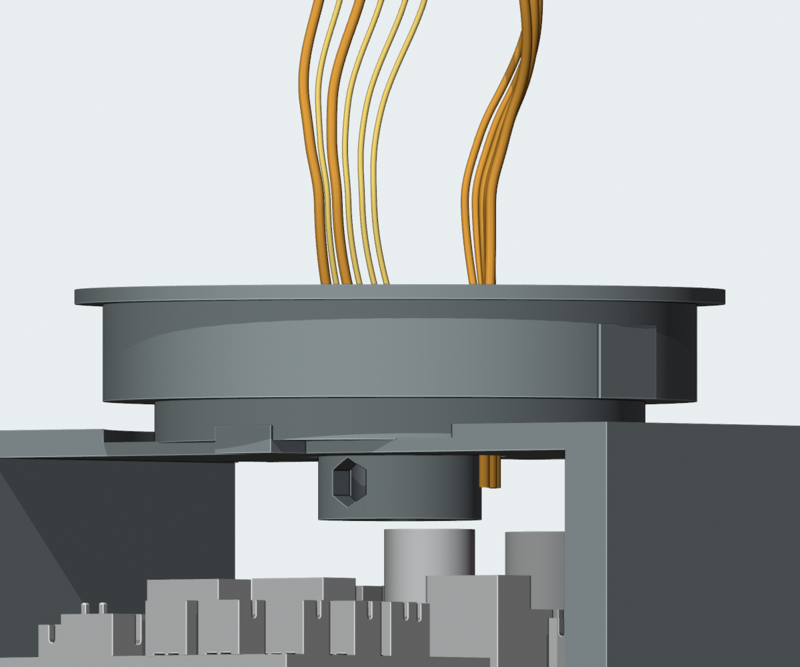
新的颈部局部：CAM在左侧，喇叭预留在右侧，Z149才开始转弯。橙色导线是未选定参考，开放端还没有接至两端。
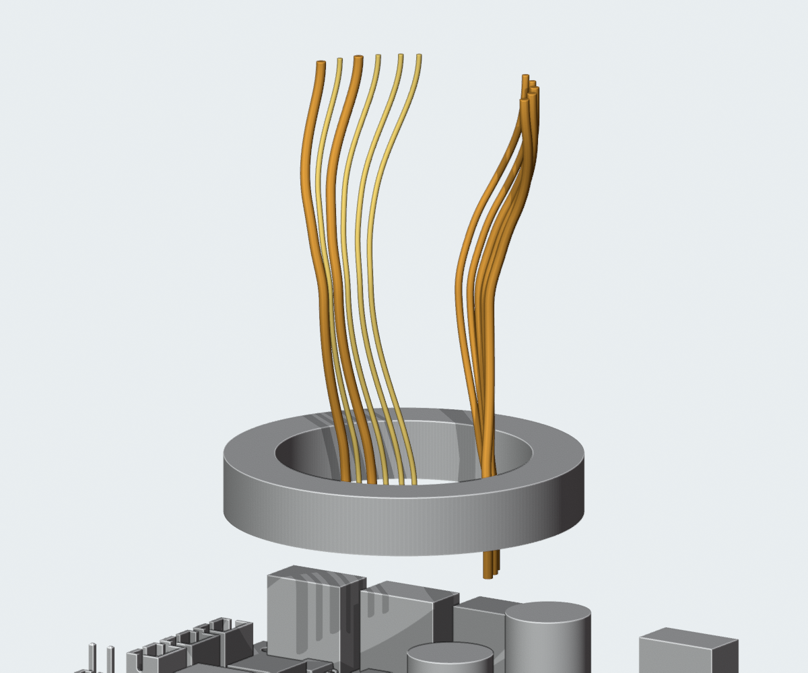
隐藏部分结构查看11条局部曲线；间隙检查仍包含完整实体。这不是整机接线完成图。
本次实际检查
| 范围 | 结果 |
|---|
| 左侧颈部11条局部曲线 | PASS。1716项实体分组检查、715组线间检查；最小间隙下界0.322mm，最小采样弯曲半径10.28mm。限定于13个偏航、10个俯仰离散姿态及所用数学曲线。 |
| 九根身体线同时存在（旧Z142入口） | BLOCKED，未找到同时通过的组合。本次参与组合的独立选项共2121条；单线通过不代表能同时装入。 |
| 新Z149入口的身体过渡 | BLOCKED。本轮重算与从外侧进入的圆弧均未找到通过路径；高位入口局部放得下，不等于身体导线能穿入。 |
| 头部上端连接（Z142研究） | BLOCKED，单根上段有解，四根的组合未通过。已重新生成上部连接；四线组合仍有冲突，也尚未与新的Z149局部排布联合检查。 |
| 端头与线材 | 已接收硬件资料复核。部分目录字段匹配；压接、供电全过程、完整USB尾线和舵机分线板仍未定型。 |
| 完整线束与制造 | BLOCKED。固定、应力释放、FFC/FPC、带线装配及制作图尚未完成。动态回弹、疲劳、温升和实配NOT_TESTED。 |
五条供电/舵机线采用未选定Alpha2622的最大外径1.1684mm参考；两条喇叭局部线采用未选定Alpha2626的0.889mm参考；CAM信号线为0.6604mm参考。所需0.3mm表面间距是规划值，并非已验证的生产公差。没有缩放真实硬件或降低检查阈值。
硬件资料新增结论
无N后缀的XH端子与2622仅AWG和绝缘外径两项匹配；带N后缀的版本不匹配。Adafruit5978原装CC配置是受电端，不能直接作为合格CAM供电端。已取得GCT裸公头厂图，但它还不是完整带线组件。较粗的Alpha6713条件备选不能直接替换R6.5路径，尚未应用。
机械接收说明 · 硬件完整证据与压降计算 · 75文件只读接收记录
证据与剩余工作
Z142入口九线组合 · Z149进线检查 · CAM上段组合 · 当前颈部局部检查 · 局部Blender研究 · 端部输入与下一步 · 线材与功能依据 · 本轮实际命令 · 前期命令
保留的其他研究
交换机械排列 · 错开汇入高度 · 错层方案局部段 · 交换排列的全局距离诊断
有限候选失败只说明这些路线不能同时满足约束，不证明所有布线方式均不可行。
89cb07f571367bf87b627c771998d0cc0c28b873be575afdb4002c9bcf5b499f。PROTOTYPE / UNVALIDATED。上部走线：冲突位置与新的余量圈候选
旧俯仰余量圈位于第3、4根CAM信号线出口上方。R7、45°起始弯的72个方向均未找到通过方案；这是该局部路径族的结果，不代表所有路线都不可行。两种外扩颈部曲线又碰到Pitch_Yoke，未采用。
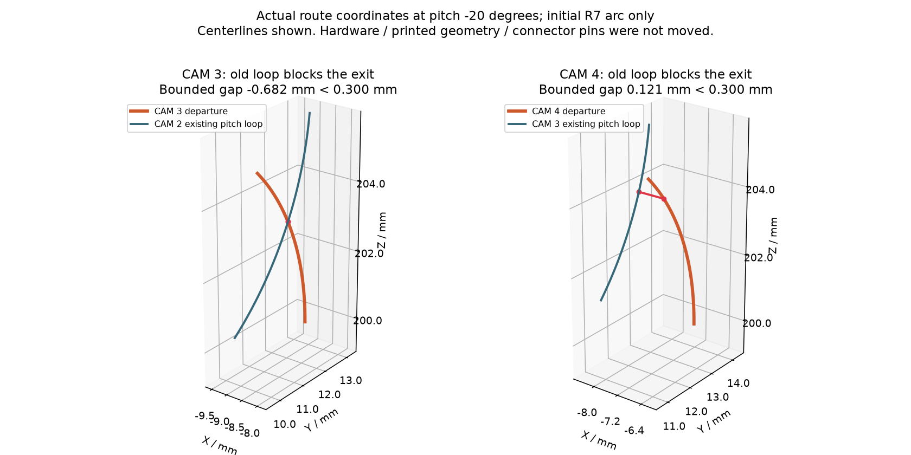
中心线诊断视图；间隙结论来自三维距离计算，不能仅凭投影判断。
独立的新候选把原尾段的平直部分缩短3／5／7mm，并把临时线圈起点同步后移。连接器端点保持。三个候选分别通过600次实体检查、40次自身检查、60组线间检查，并检查了与现有11条颈部曲线的关系；最小保守线间间隙约0.305mm。旧数据较疏时的保守界不足记录保留；仅细分同一条折线后重新求界，要求仍为0.3mm，几何未改变。
这三个是余量圈局部候选：上部汇合、完整端部连续性、应力释放及带线装配仍未完成。主模型未修改，C6开口仍待确认。
起始方向检查 · 外扩颈部失败记录 · 后移线圈及原始间隙界 · 同一几何的细分复核
CAM上部汇合复核
历史：后侧出口的剩余冲突（见下方最新修正）
此候选中，排除一根CAM供电线后，其余10条局部路线的585组线间检查通过。红色是仍需修正的供电线；青色／橙色区分其他规划导线，全部仍为未选定线材的占位路径。原下部入口保持，主模型没有改动。
这不是整束通过：红线与托架及相邻CAM线的距离仍不足；后侧路线的长度变化、上部余量圈、端部连接及带线装配还要继续完成。
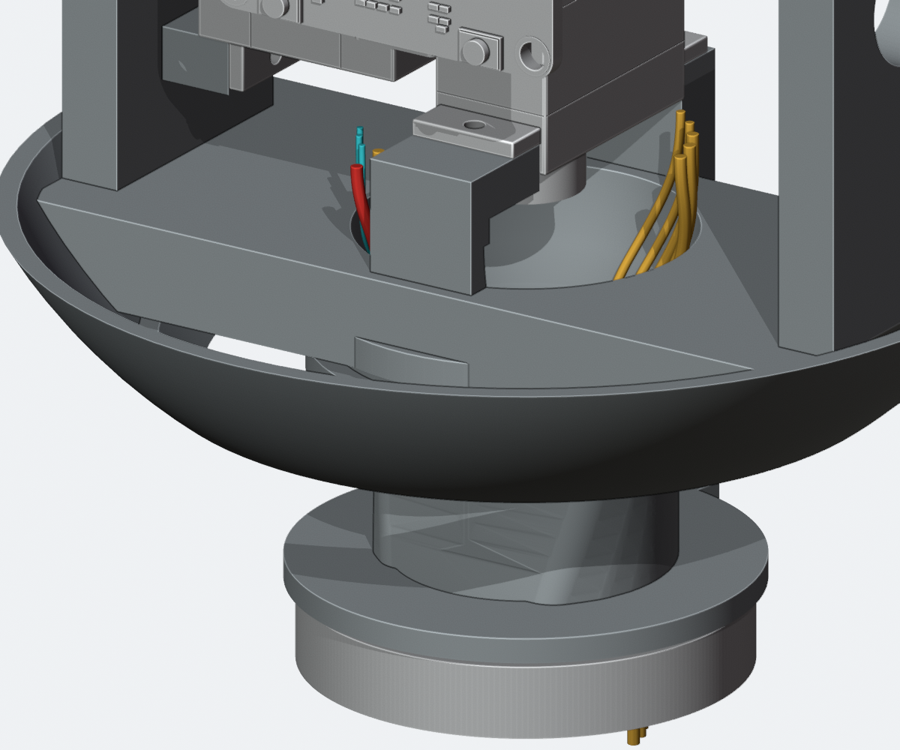
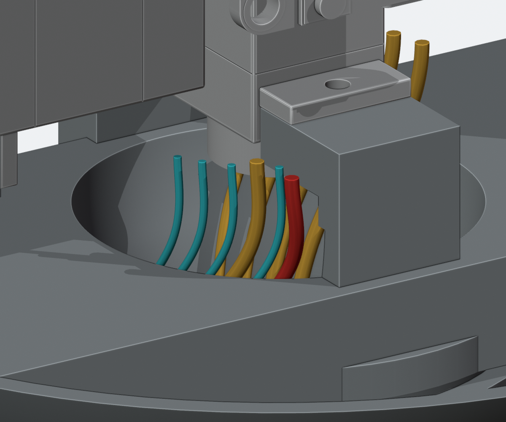
实际检查与复现 · 可编辑诊断模型
CAM上部共同走向仍未通过。尚未与C6九线下段完成共同验证。C6仍待确认，主模型未采用；其余上部端点、固定与应力释放、FFC/FPC及带线装配未完成。
- CAM 1：0条通过本轮单线筛查的候选
- CAM 2：0条通过本轮单线筛查的候选
- CAM 3：0条通过本轮单线筛查的候选
- CAM 4：0条通过本轮单线筛查的候选
单线候选不等于整束通过。当前组合结果仍为BLOCKED，保留所有失败记录。
诊断修正：旧程序给线对排序时没有同步交换方向标签，导致部分“哪根线碰哪根圈”的字段反向。旧PASS／BLOCKED结论同时检查两个方向，未受影响。本轮按导线针号与障碍线圈针号直接记录；旧报告保留。
后移3mm的尝试只解决前两根的局部问题；后两根仍有交叉或自身接近。随后检查更靠后的已有线圈候选。没有改变原连接器逻辑针序、硬件姿态、打印件或间隙要求。
出口方向复核
直接右移会碰偏航舵机，左移会碰俯仰托架。后侧候选还需同时处理颈内限制、线间距离和长度补偿；局部路线通过也不能代替完整端部和带线装配。
本轮单线筛查 · 实际执行命令
此前：颈部11线局部通过
保留其他10条路径，仅调整CAM供电线离开颈部的弯曲位置。新增156组结构间隙检查、130组线间检查通过；其余585组线间证据按相同曲线复用。供电线与其他线的最小保守净距为0.345mm，所需预留为0.3mm。它在零位与托架的最小采样净距约0.332mm。
这只通过了颈部局部路径。9根下部工作导线加2根扬声器路径预留，不等于11根完整端到端线束；线材、端头、固定与应力释放、整束运动及带线装配尚未闭环。C6入口开口仍待确认，主模型、STL和动画未加入这些候选。
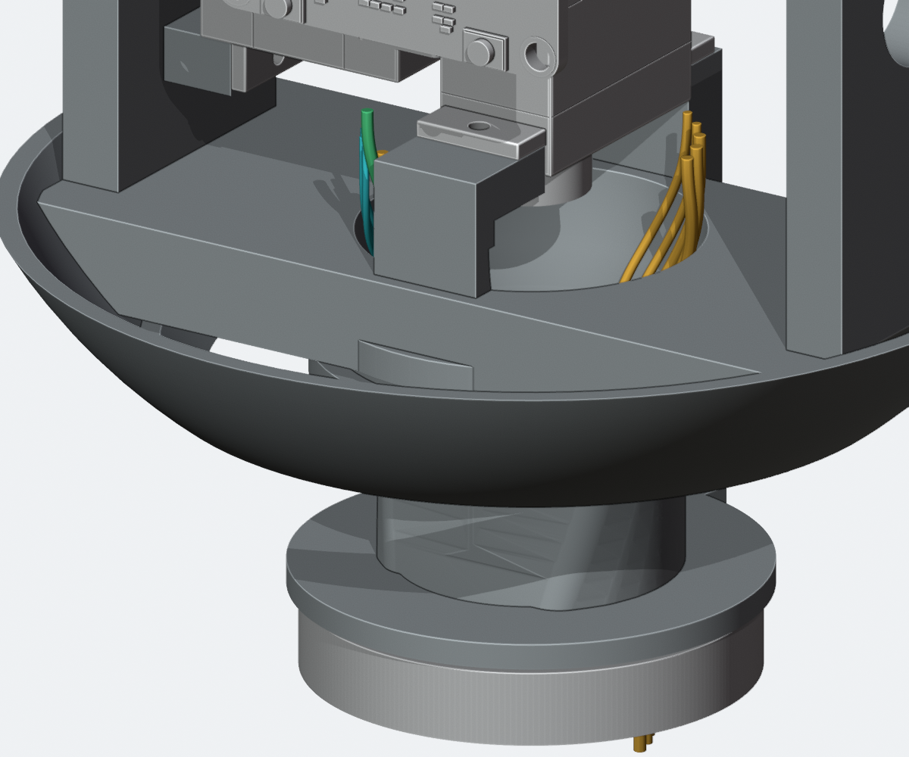
绿色仅标识本次调整的供电路径；所有曲线仍是独立规划候选。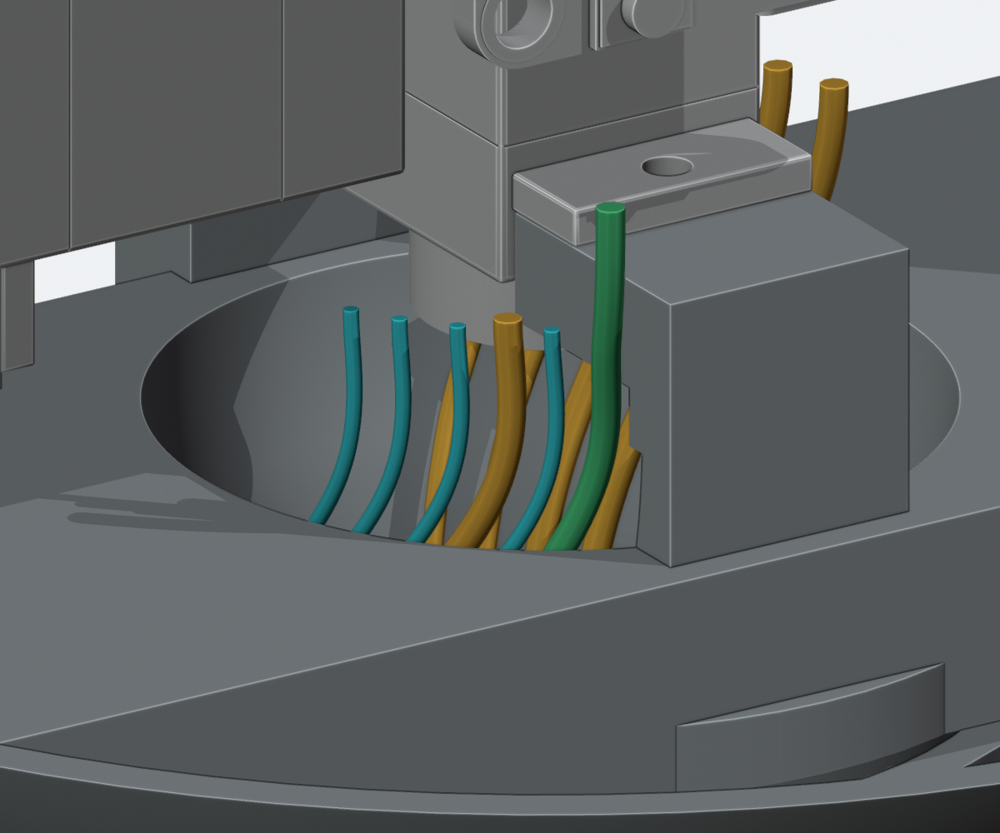
绿色仅标识本次调整的供电路径；所有曲线仍是独立规划候选。可编辑局部候选 · 本次局部交付记录
上段还剩什么
补偿上段长度后的回环没有碰到结构件，线圈之间的细化检查也通过；但与颈部导线仍有交叉。当前有限姿态记录有438组未满足净距的线对检查，集中在CAM插头引线弯出段与新的颈部路线接续处。这个数量是姿态检查条目数，不是独立缺陷数。
已比较向后与向侧面绕回的候选。其状态保留在下列记录中；失败路线没有用于主模型，也没有通过削薄支架或放宽净距来放行。
实际执行命令与结果 · 接续说明
此前：CAM侧向引线与颈部联合通过
四根CAM引线保留原连接器位置和5mm直线出线段，改为从侧边绕回。仅将三根颈部导线的上端向前缓移1.4mm，其余八条路径不动。新增468组结构检查、351组颈部线间检查和1560组引线／颈部线间检查通过；其余未变化的证据按原曲线复用。改变的颈部曲线最小采样弯曲半径为7.105mm，没有放宽7mm规划限制或0.3mm净距。
侧向余量圈与引线也已通过本轮联合筛查，下一步补齐颈部出口至余量圈的四段固定连接。整条线束仍为BLOCKED，未放行供应商线长图纸、采购或制造。C6开口仍待确认，主模型、STL和装配视频仍保留已采用的C5＋K1版本。
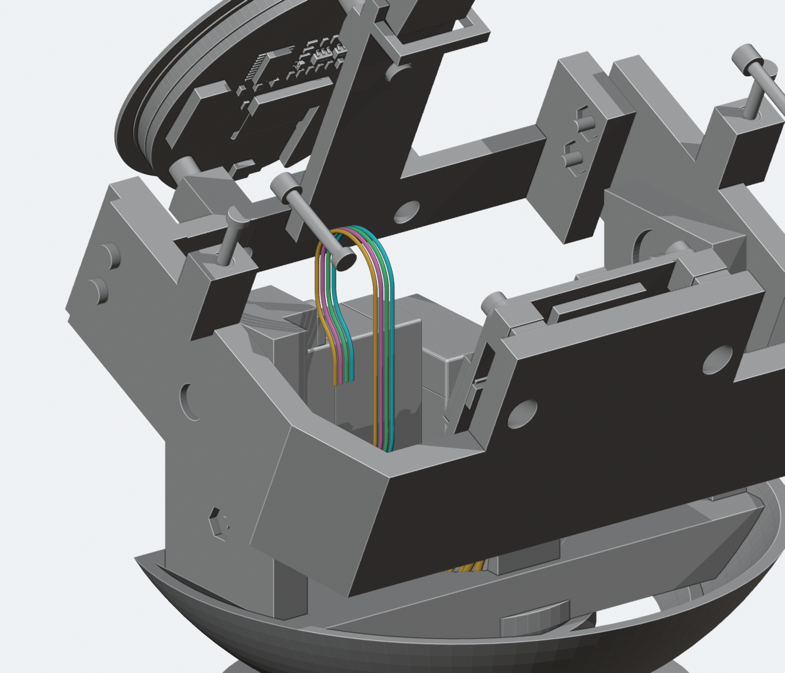
俯仰25°；外壳隐藏以检查内部。图中保留未完成连接的断口，曲线均为规划候选。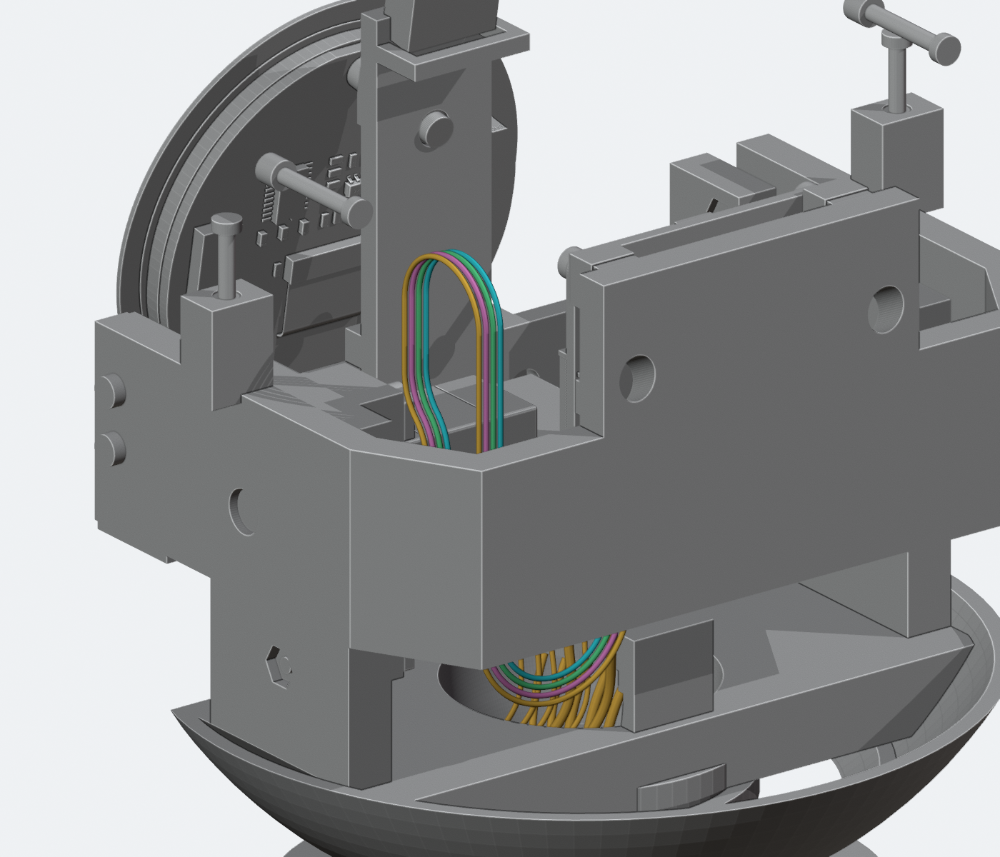
俯仰0°；外壳隐藏以检查内部。图中保留未完成连接的断口，曲线均为规划候选。可编辑独立候选 · 当前接续点 · 实际执行记录
接下来：固定连接段与总长度补偿、身体前段共同检查、固定与应力释放、其他上端点、FFC/FPC、完整带线装配。端头和线材的实物资料限制继续保留。
此前：CAM四线连续路径（C6条件候选）
已接通四段头部固定连接，并接到身体内原有路线。四根CAM参考路径现在从基板J5延伸至CAM板的估算端口。机械零位和偏航±60°、俯仰−20°至25°共130个组合姿态均已检查；没有移动板卡或舵机。
头部连接新增520次导线自身回绕检查、780组完整四线间距检查；身体接续新增5850组交叉检查与585次整条路径回绕检查，均通过。未变化部分以文件哈希核对后复用原检查。采用0.3mm规划净距，CAM新增圆弧半径至少7mm。
主模型仍为已采用C5＋K1的M1.49。这一连续候选需要C6局部开口，C6仍待你确认；主模型、STL和装配视频没有采用它或本候选线束。完整线束状态仍为BLOCKED。
| 参考路径 | 名义中心线长度 / mm | 姿态间长度变化 / mm |
|---|
| CAM_1 | 373.9 | <0.01 |
| CAM_2 | 380.9 | <0.01 |
| CAM_3 | 370.2 | <0.01 |
| CAM_4 | 357.5 | <0.01 |
表内是含弯曲余量的几何中心线路径，端口仍有估算，不是可下单的裁线长度。端子内长度、加工公差与固定位置尚未冻结。
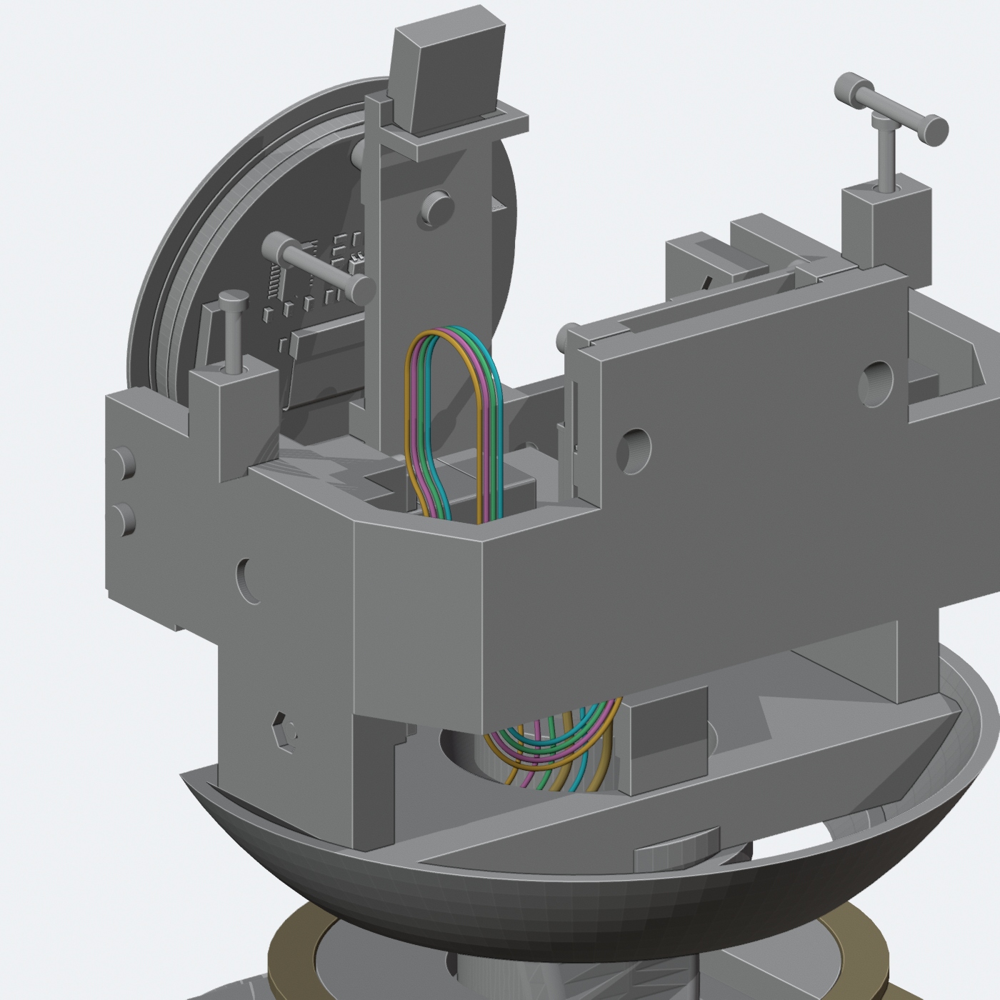
头部连续连接，机械零位。有色线为四根CAM规划路径；金色线为其他五条下部规划路径，灰线为两条扬声器颈部预留。浅棕色固定座使用未批准的C6候选。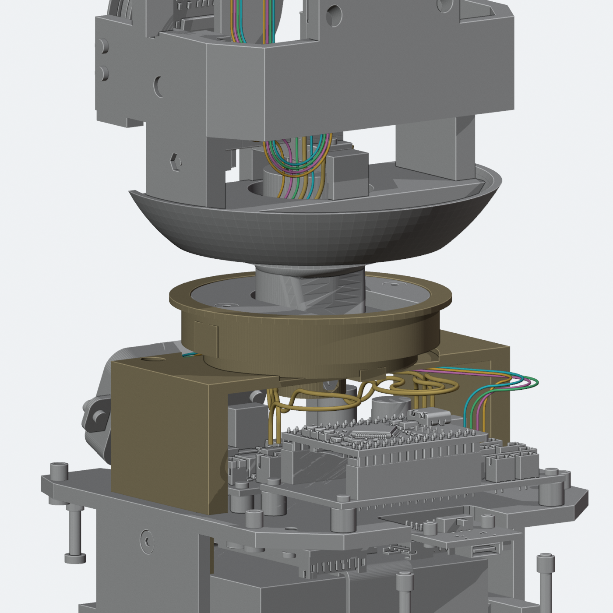
身体到颈部的连续路径，外壳隐藏。有色线为四根CAM规划路径；金色线为其他五条下部规划路径，灰线为两条扬声器颈部预留。浅棕色固定座使用未批准的C6候选。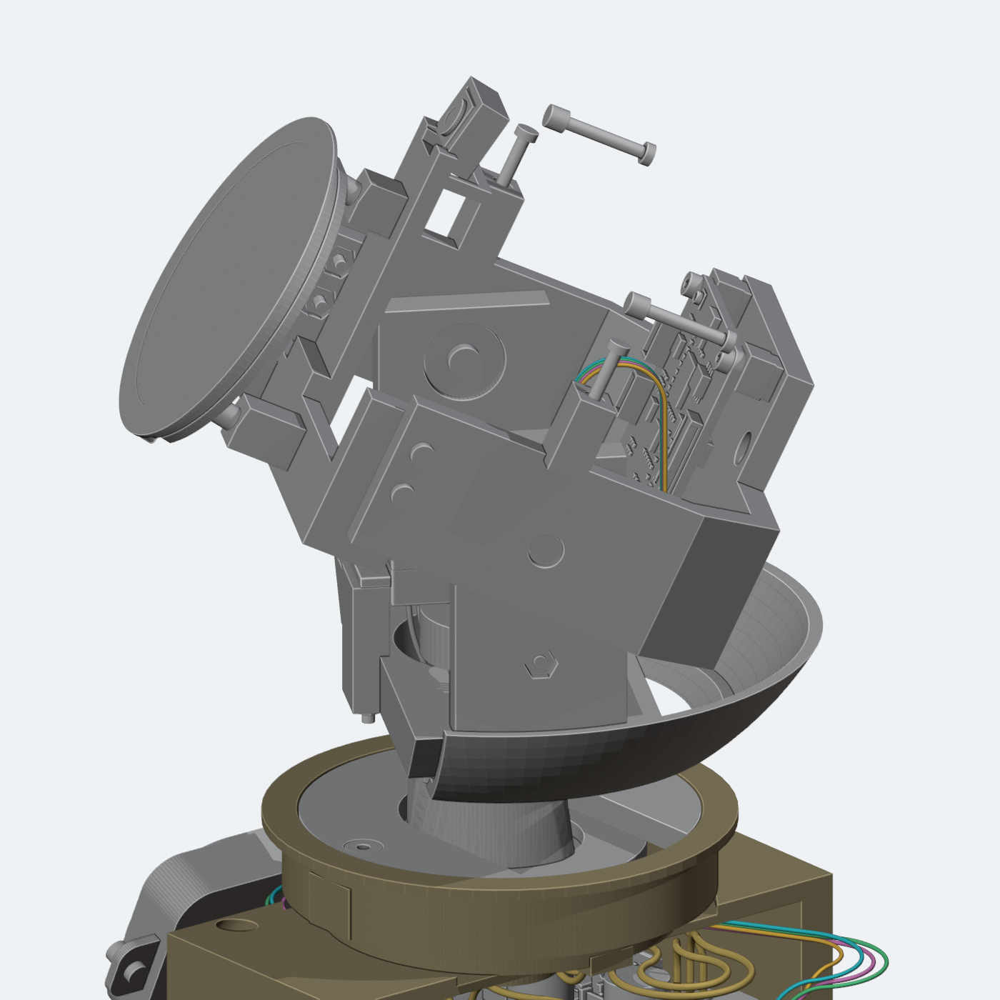
偏航60°、俯仰25°的组合姿态。有色线为四根CAM规划路径；金色线为其他五条下部规划路径，灰线为两条扬声器颈部预留。浅棕色固定座使用未批准的C6候选。可编辑连续路径候选 · C6开口对比与待确认范围 · 状态与剩余项 · 实际执行记录
早期位置测距（下方已有新候选）：偏航端规划夹持点中心距现有偏航托架最近约6.8mm，CAM端距头托最近约5.7mm，均未形成实际夹持结构。这个距离检查不能当作固定验证。
仍需完成：其他上端连接、固定与防拉扯、FFC/FPC以及完整带线装配。厂家端头资料和实物弯折寿命的待验证项继续保留。
此前：CAM导向、夹持与就位剪尾受阻
主模型仍为已应用C5＋K1的M1.49。以下是独立研究，未写入主模型、STL或装配视频；C6局部开口也仍待确认。
本轮发现：偏航时，颈部到中间导向点的材料长度变化约8.04～8.49mm。因此中间不能夹死，必须允许滑动；真正的防拉扯夹持留在身体端和随俯仰运动的头部端。
新候选在Pitch_Yoke上形成5.5×2.6mm短滑动窗口；在Pitch_Cradle上形成一个夹持座，把扎带移到四根CAM线回弯后的现有直段。调整2件现有打印件，不增加独立打印件或螺钉，增加1条扎带。当前四根CAM路线及其他七条参考线全部保留。
| 检查 | 当前结论 |
|---|
| 导向与夹持几何 | PASS：130个头部组合姿态；导向1430次、夹持4290次线/特征检查，原生硬件和两处候选之间未检出所查干涉 |
| 夹持点是否拉扯活动线段 | PASS：520次材料位置核对，头部固定点相对两端的数值变化均小于0.01mm；偏航中间点仍须滑动 |
| 局部穿端子空间 | 条件PASS：仅按1.8×1.0×4.1mm估计裸端子检查直穿窗口，不代表真实压接端子或完整穿线装配通过 |
| 扎带作业 | BLOCKED：三种80mm临时长尾空间可用，但已查的17个剪钳方向均受托架或线路阻挡；需要验证预装顺序或其他可用工具路径 |
此前研究的穿线方向：CAM端暂不入壳；下方新离机预装研究改查身体端暂不入壳，最终工序尚未确定。此要求仍需真实端子、压接尺寸和装配方法确认；不是采购或加工放行。
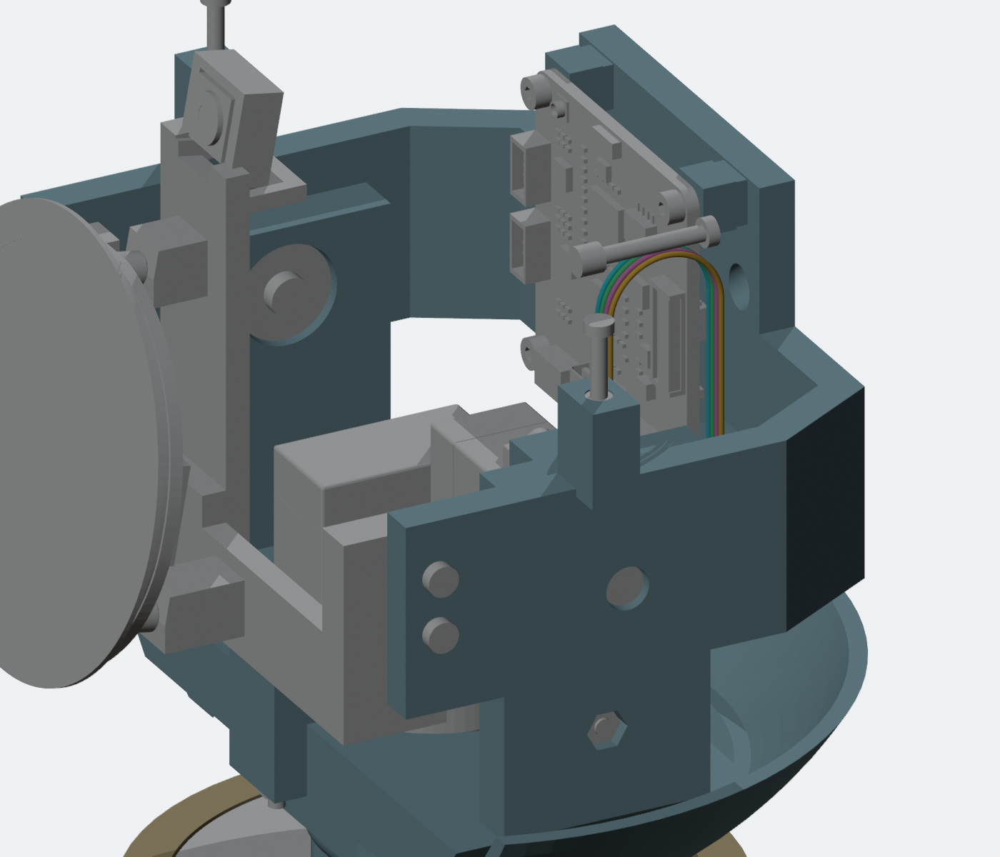
头部候选总览。外壳隐藏，其他原生硬件保持原尺寸与姿态。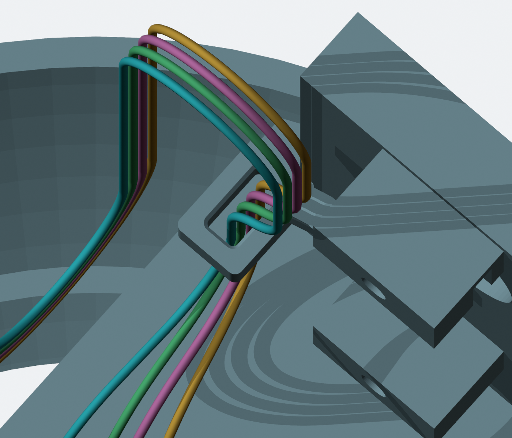
偏航托架的一体滑动导向。局部图仅保留相应承载打印件与线束；夹持座图另保留CAM板。隐藏仅用于看清结构，干涉检查仍包含完整原生部件。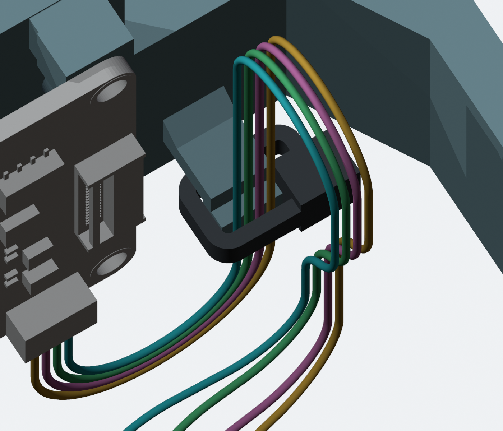
俯仰托架的一体夹持座与扎带。局部图仅保留相应承载打印件与线束；夹持座图另保留CAM板。隐藏仅用于看清结构，干涉检查仍包含完整原生部件。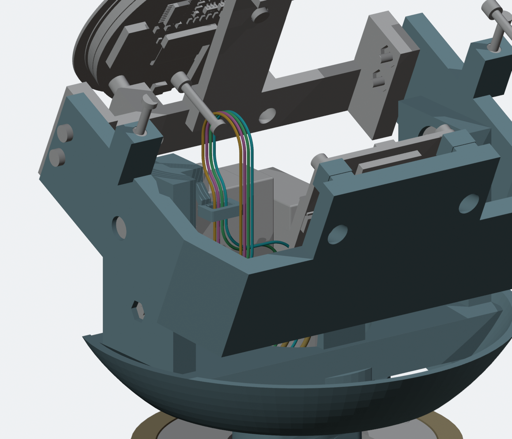
抬头25°的候选姿态。外壳隐藏，其他原生硬件保持原尺寸与姿态。可编辑独立候选 · 状态与下一步 · C6待确认开口 · 实际命令和失败候选记录
下一步先验证夹持和剪尾的预装位置、对应的自由线形，以及随后装入头托的连续过程；再完成身体端固定、其余上端接口、FFC/FPC和整机带线装配。完整线束仍为BLOCKED。实际滑动磨损、夹持力、弯折寿命及打印强度仍为NOT_TESTED。
此前：CAM离机固定、剪尾与带线落座
夹持座保持现有候选高度。这次解决了先前“装好后剪钳进不去”的名义操作空间问题：先在离机头托上完成固定和剪尾，再将组件装回。主模型仍为已批准的M1.49 C5＋K1；本研究没有应用C6或线束固定候选。
| 已查范围 | 结果与边界 |
|---|
| 离机剪尾 | PASS：剪钳作业包络、6种长尾空间；完整机器人作为旁侧障碍保留。工具外形仍有估算。 |
| 带线移入头托 | PASS：1363个位置，四根身体端线尾保持松开、举起；线长保持。不是最终已穿好线束的装配检查。 |
| PH裸端局部穿导向 | 条件PASS：目录通用5.7×2.08×1.5mm轮廓；三根已穿线临时分两排。实际压接外形、公差仍未确定。 |
| 落座后的完整穿线与接插 | NOT_TESTED：仍需完成导向/颈部穿线、自由线形转换、入壳及身体端插合。 |
| 正式端子和细线匹配 | BLOCKED：旧交接SPH002的绝缘OD下限0.8mm，大于当前细线0.6604mm。已记录SPH004外径匹配的条件比较，未改BOM。 |
图中的自由线尾延伸出画面，实际名义余线约304～334mm。隐藏外壳仅为看清装配，原生外壳仍包含在移入检查中。短轴、光学件及头壳按明确顺序后装；真实手部和装配力尚未验证。
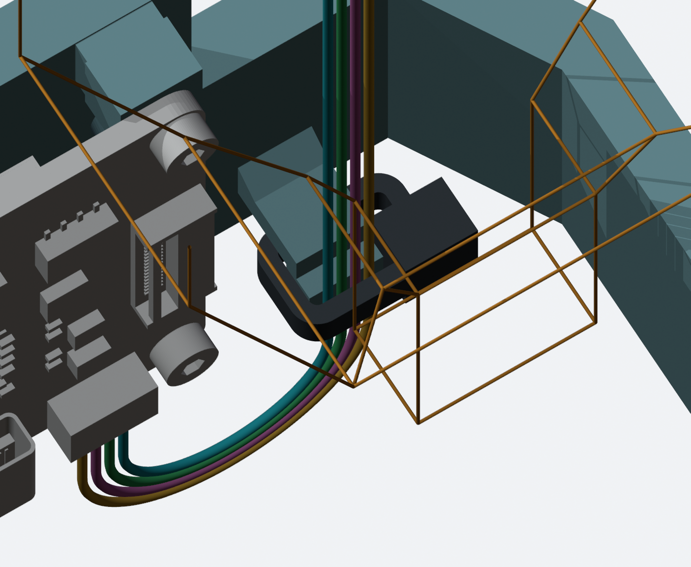
先在离机头托上固定、剪尾。橙色线框是剪钳作业包络，不是零件；图中截去包络的远端。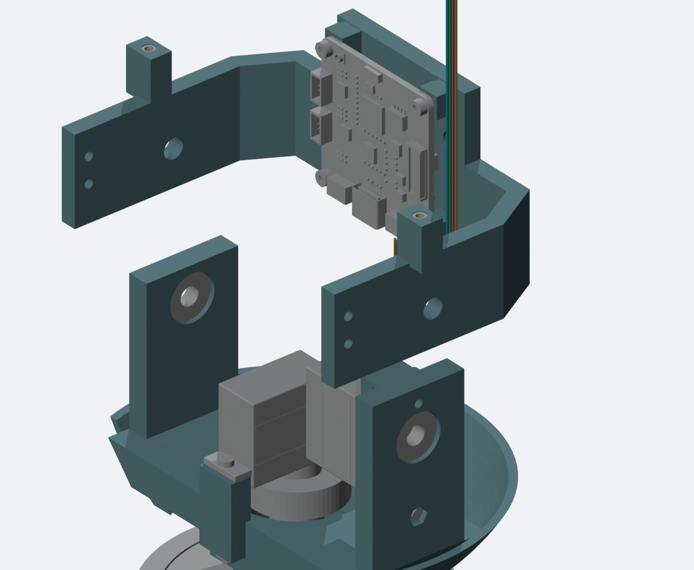
预装好的头托移到偏航座上方，再竖直下放。图示距最终位置35mm；实际检查从80mm上方开始。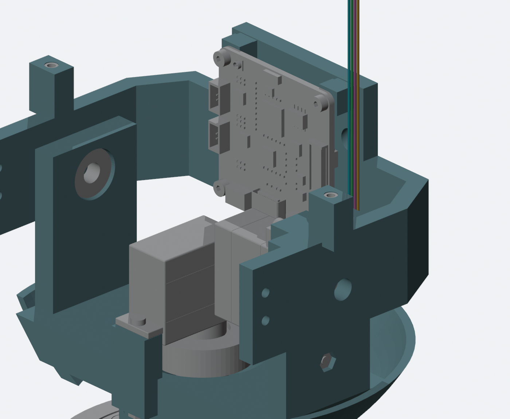
头托已落座，四根身体端线尾仍暂时举起。它们尚未穿入导向和颈部，也未插入PH胶壳。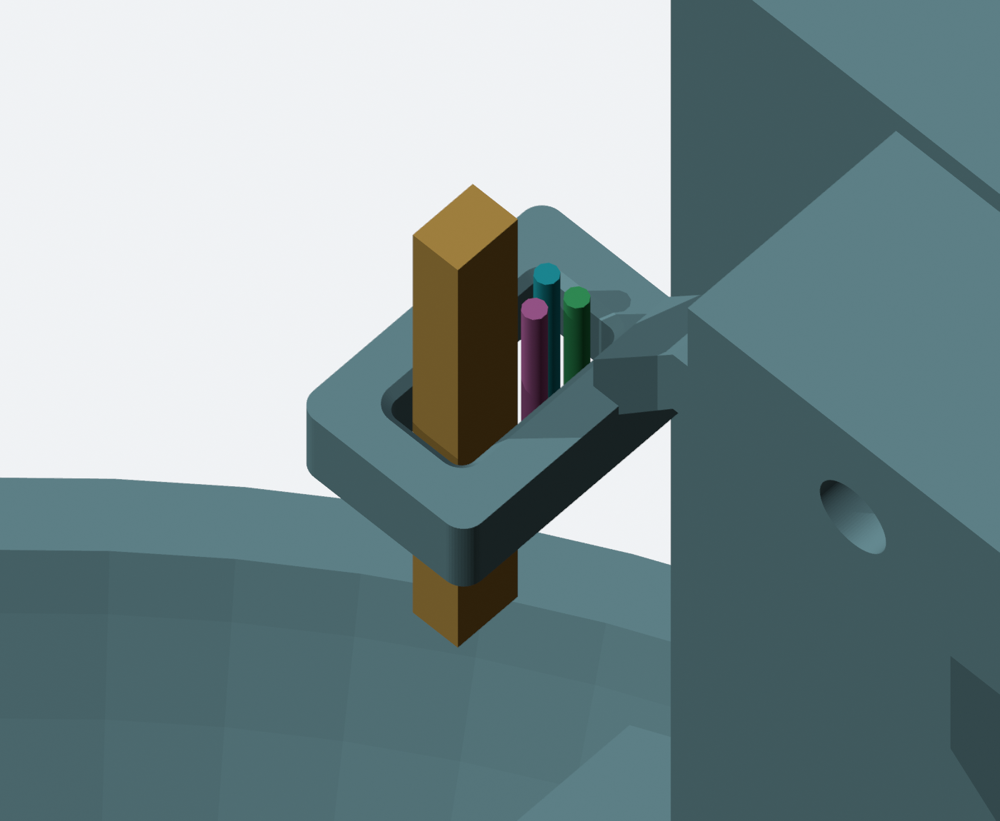
局部PH端子穿口检查：琥珀色是目录轮廓的直线扫掠，三根已穿导线暂时分成两排。不是实际端子的精细模型。具体工序与未完成项 · PH端子交接 · 可编辑装配研究 · 主模型／硬件／STL／视频完整性复核
下一步验证落座后的线形转换和完整穿线，再完成身体端固定、其余上端接口及FFC/FPC。完整线束仍为BLOCKED；候选未进入主模型或视频。
当前：临时弯回通过，完整穿线仍有两处卡点
主模型仍为已批准的 M1.49 C5＋K1。新检查没有改变主模型、STL 或装配视频，也没有将 C6 和固定座候选应用进去。
| 范围 | 结果 |
|---|
| 自由线尾停放／弯回 | 453 个有限姿态 PASS，四根线长度保持；逐根有条件检查，不等于整套顺序通过。 |
| 第一根端子下穿导向 | 186 个位置 PASS，仅针对目录名义轮廓。 |
| 后续端子与已放线 | BLOCKED：先整理好的回弯挡住后一根端子；已保存明确交叉点。 |
| 直接沿最终线形穿颈 | BLOCKED：受托架／舵机限制。向通道中部靠拢的有限备选也未通过；需重新安排临时穿入路径和反力件初装。 |
| PH 线材／端子资料 | 硬件资料已接收，实际压接包络与工艺仍 BLOCKED。正式 BOM 未替换。 |
后续工作还包括身体端固定、其余上端接口、FFC/FPC 和完整带线装配。图中的端子形状、有限采样以及无软线的装配检查，都不能当作实物合格或制造放行。
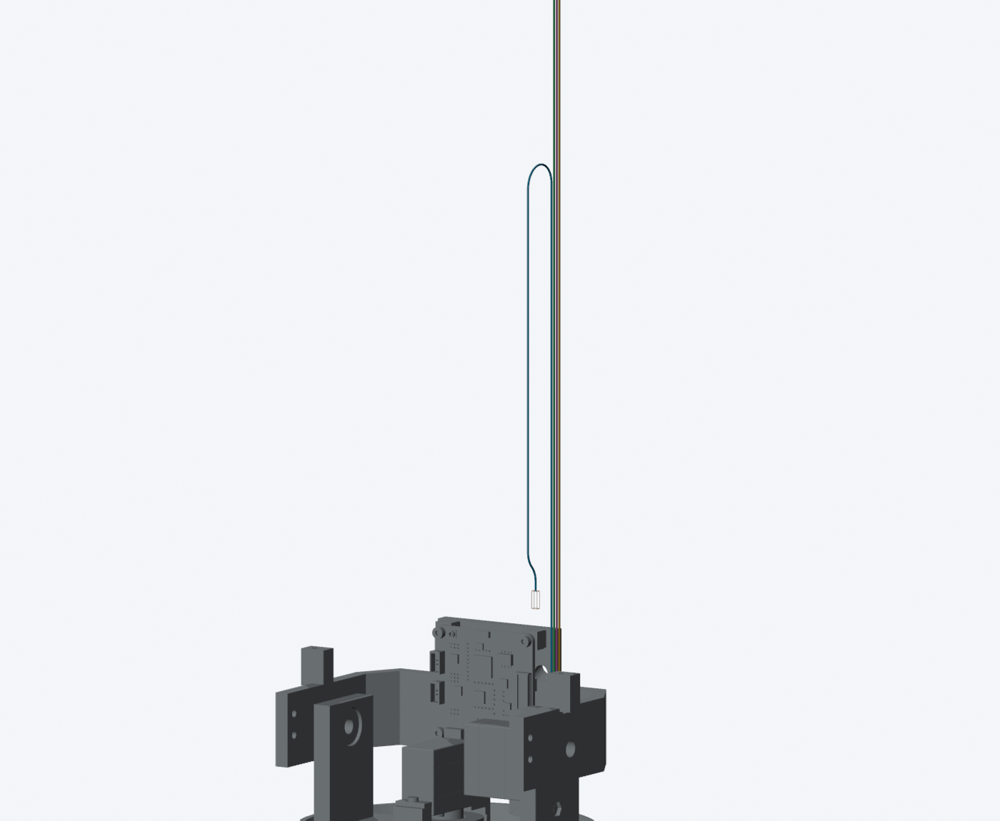
第一根线弯回到导向上方，另外三根暂时举起。图中是施工阶段的长余线，部分线尾超出画面；并非最终装配姿态。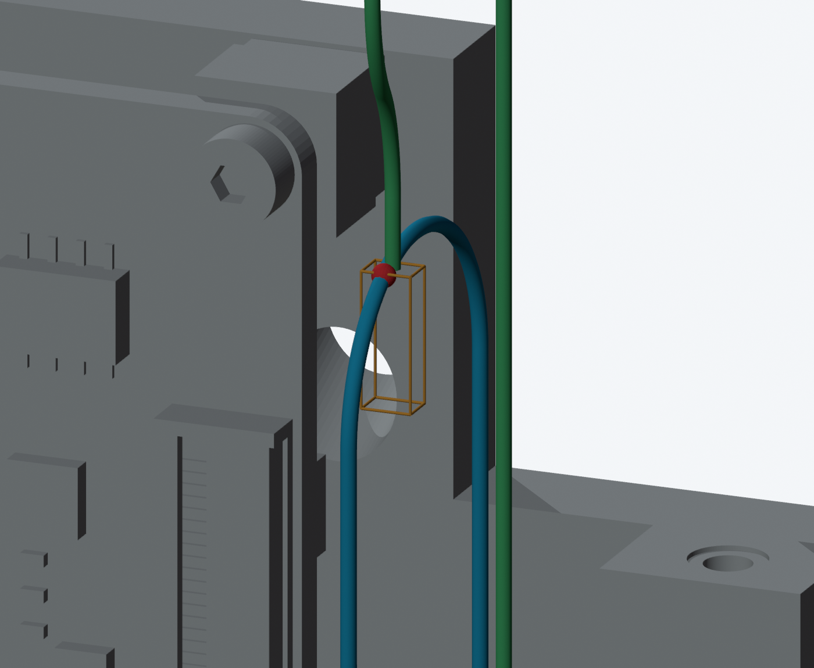
蓝色：第一根已放好的线。绿色：第二根正在下穿的线。橙色线框：名义端子；红点：前一根线进入端子盒的一处交叉。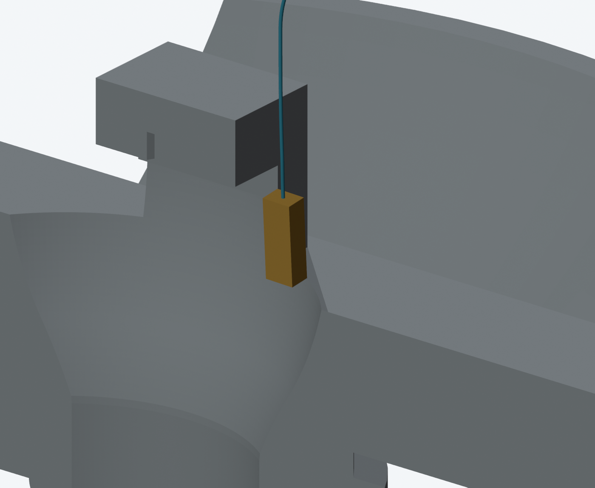
托架剖开后查看名义端子的间距不足位置。橙色只是目录轮廓；剖切仅用于看图，实际零件未删改。具体步骤与限制 · 硬件资料接收 · 接收校验 · 可编辑 Blender 局部检查 · 主模型／硬件／STL／视频保留检查
新增：屏幕排线中央段的收纳容量已检查
屏幕、CAM和相机同属俯仰组。独立候选的170 mm中央段已通过130姿态及指定前后壳平移路径检查，暂按两端各15 mm预留原配200 mm排线的剩余长度。
两端未连接，宽厚和允许弯曲半径仍是假设。固定、应力释放、相机FPC和完整带线装配尚未完成；主模型、STL和视频不变。

查看收纳候选与明确边界 · 剩余要求
新增：排线两端方向复核
官方已插线照片支持相机+Z、CAM屏幕−X出线；相机重建应转向，CAM屏幕座则应单独修正入口，不可一起整只翻转。LCD原厂CAD也支持−X入口，旧中央170 mm＋两端各15 mm的分配需要重做。
看方向证据和独立模型对照 · 双端长度必要条件
硬件CAM-FPC-EXIT-R1已接收；主模型、打印件、STL和视频保持，完整线束仍未完成。
后续：完整排线空间候选
194 mm屏幕自由段已通过130个姿态、候选导线与头壳拆装空间检查。CAM端补强长度和允许弯曲仍未知；相机通道末段仅约0.3 mm名义侧隙，完整排线及线束均未完成。
查看最新空间候选、失败记录和选型条件
后续：CAM 入口修正模型
相机入口朝 SD 卡、屏幕入口朝板外；保留包体外包络和其余元件。262 组同板比较、130 个姿态未检出新增相交，真实插接仍未完成。主模型未替换。
查看入口侧前后对比
供电线和头身装配：补查了锁紧依赖
整体头部与承重桥的383个刚体位置通过初筛，但上壳闭合后，两侧桥螺钉的实际装入空间受阻。无壳插头通路、供电线临时排布也不能直接组成可执行顺序；完整带线装配仍未通过。
实际剖面、阶段清单与限制 · 记录
压板工具路径与反力连接诊断
头壳和光学组件后装，左右压板螺钉在 +60°／−60° 分别操作，连续工具伸入、转动和退出检查通过。反力连杆预装会挡住头架落座，随头架落座又存在后续锁紧工具入口问题；完整线束与装配仍未通过。
操作图、实际剖面与完整限制 · 记录
待确认：身体改为前后分壳
两半壳刚体拆装和四个框架螺钉入口通过，仍为2件打印件，可取消4枚旧拼缝螺钉和4个嵌件。代价是改变外部分缝、在壳体下部留4个Ø6.6工具孔。候选未应用；完整带线合壳和传动接口仍未通过。
前后对比、打开视图与工具孔